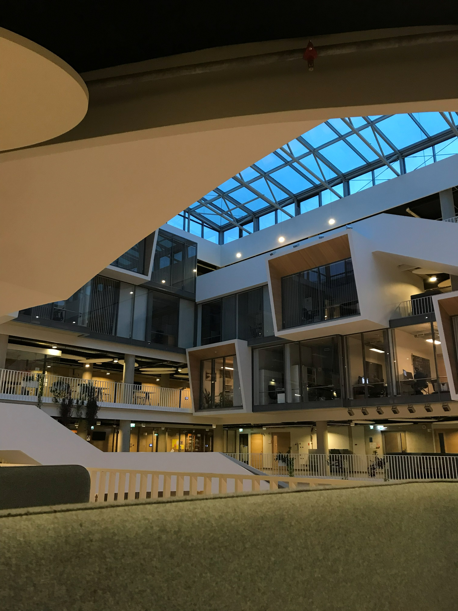
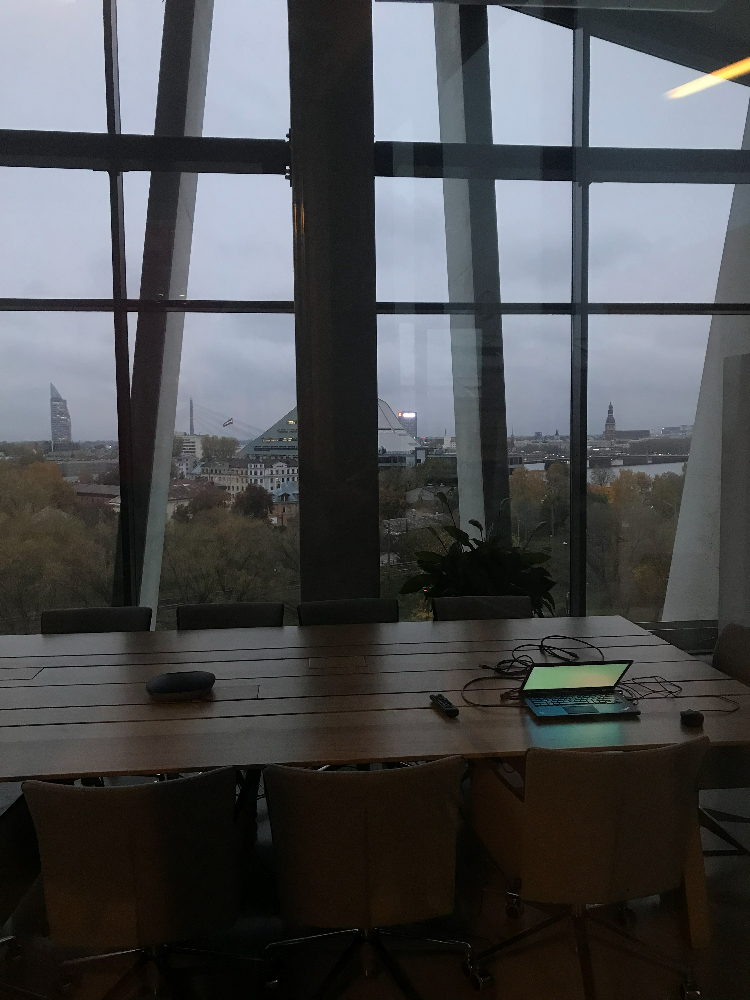
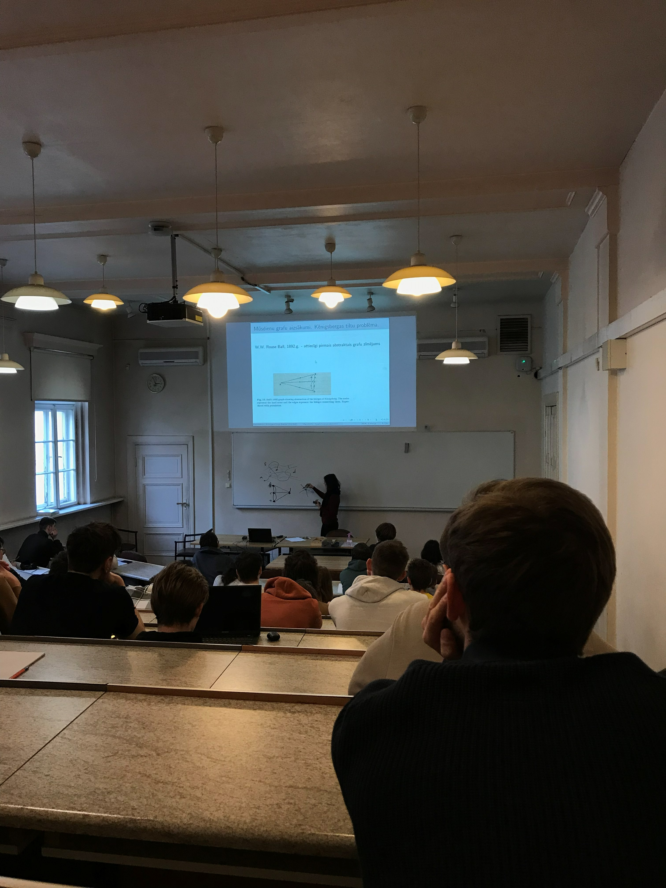
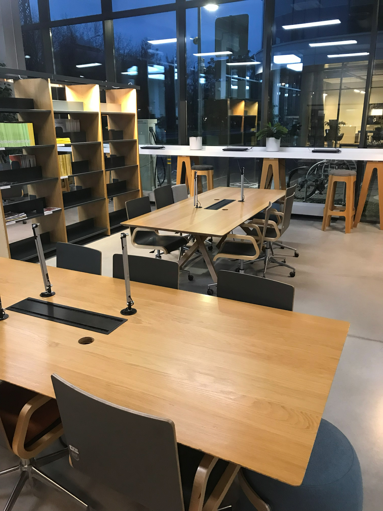
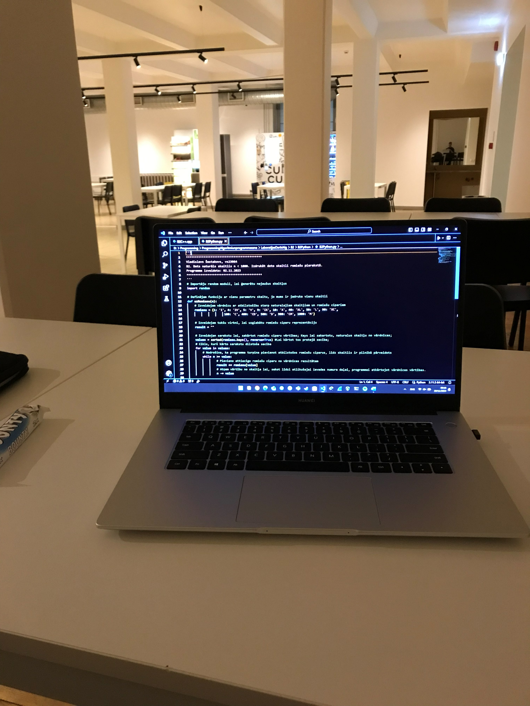
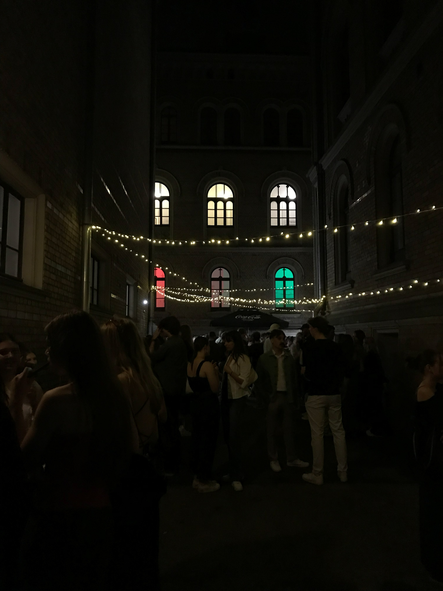

Viena darba nedēļa Datorikas nodaļas studenta dzīvē
Šī vienas lapas vietne parāda, kā darba nedēļā savienojas lekcijas, digitālie rīki, ceļš uz universitāti, komandas darbs un personīgā plānošana.
Pirmdiena
Digitālā vide un nedēļas sākums
Pirmdiena sākas ar mierīgu sistēmu pārbaudi: e-studiju kursu jaunumi, kalendārs, lekciju ieraksti un uzdevumu termiņi. Datorikas nodaļas studentam tas nav tikai formāls rituāls, jo no šīs informācijas veidojas visas nedēļas ritms.Šāda plānošana dod drošāku startu visai darba nedēļai un ļauj mācīties ar mazākām pauzēm.
E-studiju vide
Otrdiena
Klātienes lekcijas un praktiskie darbi
Otrdienā galvenā uzmanība tiek veltīta lekcijām un praktiskajiem darbiem.
Informācija par studijām
Trešdiena
Bibliotēka un laika plānošana
Trešdiena bieži parāda, cik ļoti studiju kvalitāti ietekmē mierīga darba vide. Bibliotēka kļūst par vietu, kur starp lekcijām var sakārtot pierakstus, atkārtot prezentācijas punktus un pabeigt praktiskā darba daļu bez liekiem traucējumiem.
Nodarbību saraksti
Ceturtdiena
Kodēšana un tiešsaistes saziņa
Ceturtdienā lielu daļu laika aizņem grupu darbi un tiešsaistes saziņa. Datorikas studijās reti pietiek ar to, ka katrs strādā savā pusē un beigās saliek rezultātu kopā. Kvalitatīvs projekts prasa vienotu failu struktūru, skaidrus pienākumus un regulāru pārbaudi, vai visi saprot mērķi vienādi.
GitHub projektu darbam
Piektdiena
Nedēļas noslēgums
Piektdienā svarīgākais ir godīgi izvērtēt paveikto. Es pārskatu iesniegtos darbus, saglabāju noderīgus materiālus un pierakstu, kas jāpabeidz nākamajā nedēļā.
Universitātes jaunumi